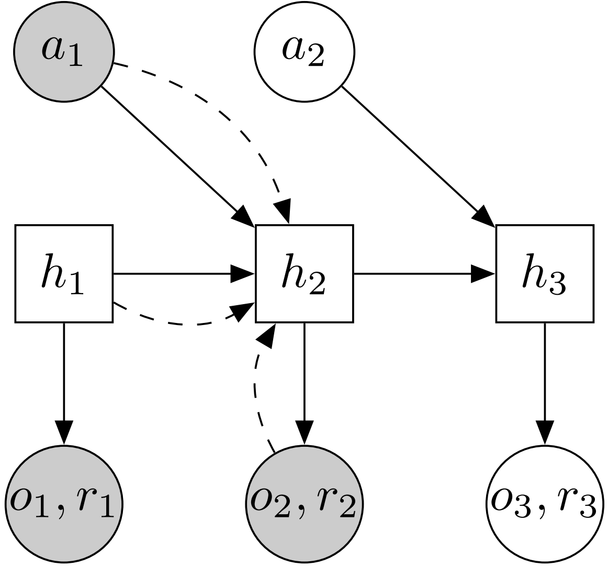
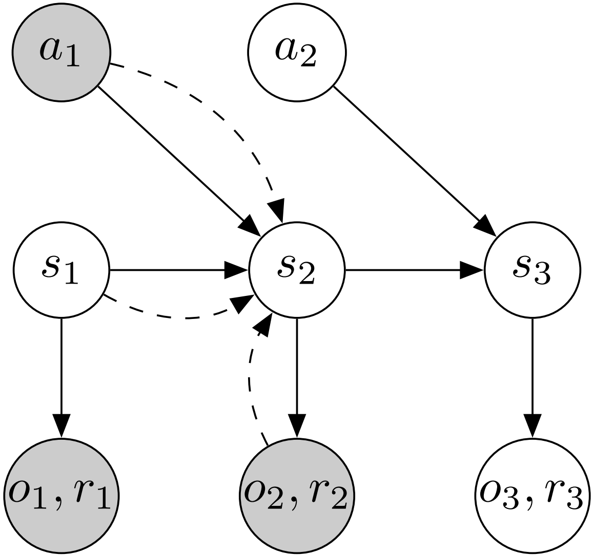
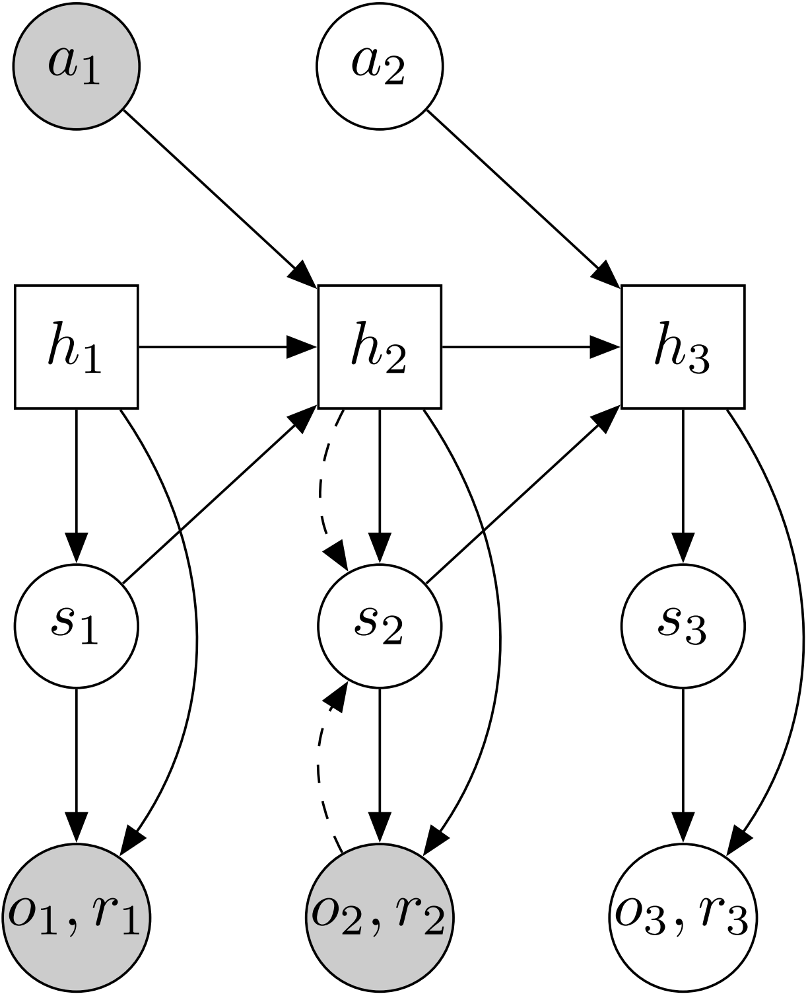
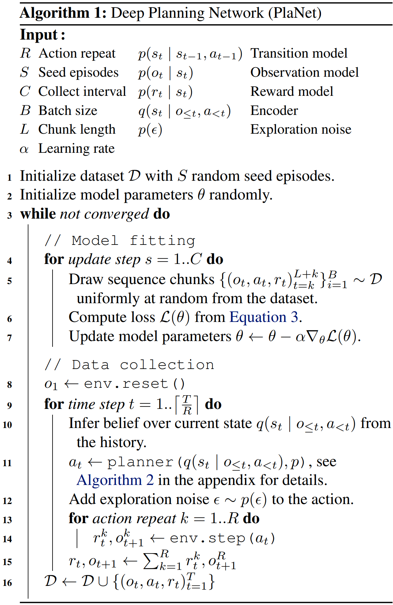
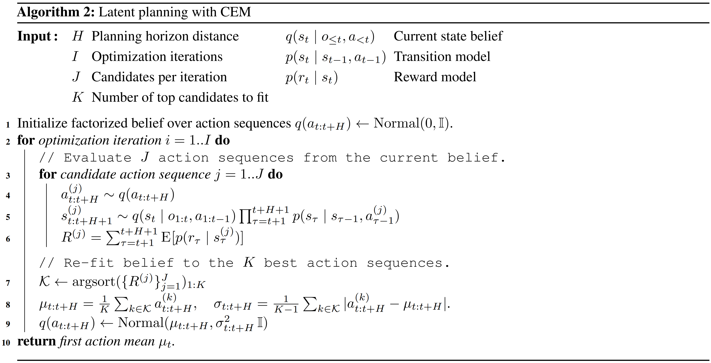

PlaNet
Recurrent State Space Model
| Model |
Type |
Definition |
Distribution Family |
| Transition |
Generation |
st∼p(st∣st−1, at−1) |
N(μ(st−1, at−1), diag(st−1, at−1)) |
| Observation |
Generation |
ot∼p(ot∣st) |
N(μ(st), I) |
| Reward |
Generation |
rt∼p(rt∣st) |
N(μ(st), 1) |
| Posterior |
Inference |
st∼q(st∣st−1, at−1, ot) |
N(μ(st−1, at−1, ot), diag(st−1, at−1, ot)) |
Instead of directly maximizing the log-likelihood of p(o1:T, r1:T∣a1:T) of sequences {ot, at, rt} sampled from environment, all components are trained jointly to maximize a variational lower bound (ELBO)
= = = ≥ = = lnp(o1:T,r1:T∣a1:T)lns1:T∑p(o1:T, r1:T, s1:T∣a1:T)=lns1:T∑p(o1:T, r1:T∣s1:T, a1:T)p(s1:T∣a1:T)q(s1:T∣o1:T, a1:T)q(s1:T∣o1:T, a1:T)lns1∑s2∑⋯sT∑t=1∏Tp(ot∣st)p(rt∣st)p(st∣st−1, at−1)t=1∏Tq(st∣st−1, at−1, ot)q(st∣st−1, at−1, ot)lnEs1∼q(⋅∣o1)Es2∼q(⋅∣s1, a1, o2)⋯EsT∼q(⋅∣sT−1, aT−1, oT)[t=1∏Tq(st∣st−1, at−1, ot)p(ot∣st)p(rt∣st)p(st∣st−1, at−1)]Es1Es2⋯EsT[t=1∑Tlnp(ot∣st)+lnp(rt∣st)+lnp(st∣st−1, at−1)−lnq(st∣st−1, at−1, ot)]t=1∑TEs1Es2⋯Est[lnp(ot∣st)+lnp(rt∣st)]−Es1Es2⋯Est∼q(⋅∣st−1, at−1, ot)lnp(st∣st−1, at−1)q(st∣st−1, at−1, ot)t=1∑TEs1Es2⋯Est[lnp(ot∣st)+lnp(rt∣st)]−Es1Es2⋯Est−1DKL(q(⋅∣st−1, at−1, ot) ∥ p(⋅∣st−1, at−1))
Replace the posterior to condition on past observations only and the objective can be rewritten as
= = ≥ = lnp(o1:T,r1:T∣a1:T)lns1:T∑p(o1:T, r1:T, s1:T∣a1:T)=lns1:T∑p(o1:T, r1:T∣s1:T, a1:T)p(s1:T∣a1:T)t=1∏Tq(st∣o≤t, a<t)q(st∣o≤t, a<t)lnEs1∼q(⋅∣o1)Es2∼q(⋅∣o1, o2, a1)⋯EsT∼q(⋅∣o1:T, a1:T−1)[t=1∏Tq(st∣o≤t, a<t)p(ot∣st)p(rt∣st)p(st∣st−1, at−1)]Es1Es2⋯EsT[t=1∑Tlnp(ot∣st)+lnp(rt∣st)+lnp(st∣st−1, at−1)−lnq(st∣o≤t, a<t)]t=1∑TEs1Es2⋯Est[lnp(ot∣st)+lnp(rt∣st)]−Es1Es2⋯Est−1DKL(q(⋅∣o≤t, a<t) ∥ p(⋅∣st−1, at))
The parameters in the probabilistic model can be optimized by reparmeterized sample and gradient descent.
|
RNN |
SM |
RSSM |
| Diagram |
 |
 |
 |
| Generation |
ht=f(ht−1, at−1)ot∼p(ot∣ht)rt∼p(rt∣ht) |
st∼p(st∣st−1, at−1)ot∼p(ot∣st)rt∼p(rt∣st) |
ht=f(ht−1, st−1, at−1)st∼p(st∣ht)ot∼p(ot∣ht, st)rt∼p(rt∣ht, st) |
| Inference |
|
st∼q(st∣st−1, at−1, ot)st∼q(st∣st−1, at−1, rt) |
st∼q(st∣ht, ot)st∼q(st∣ht, rt) |
Transitions in SM are purely stochastic. This makes it difficult to remember information over multiple time steps. While the RSSM combines RNN and SM, spliting the state into stochastic and deterministic parts.
Latent Overshooting
Learning and Planning
PlaNet fits model by maximizing the ELBO under collected dataset

With the learned model for generative process, the local action sequence can be optimized by MPC CEM with short-term rollout begin with a state randomly sampled from current posterior (belief)
